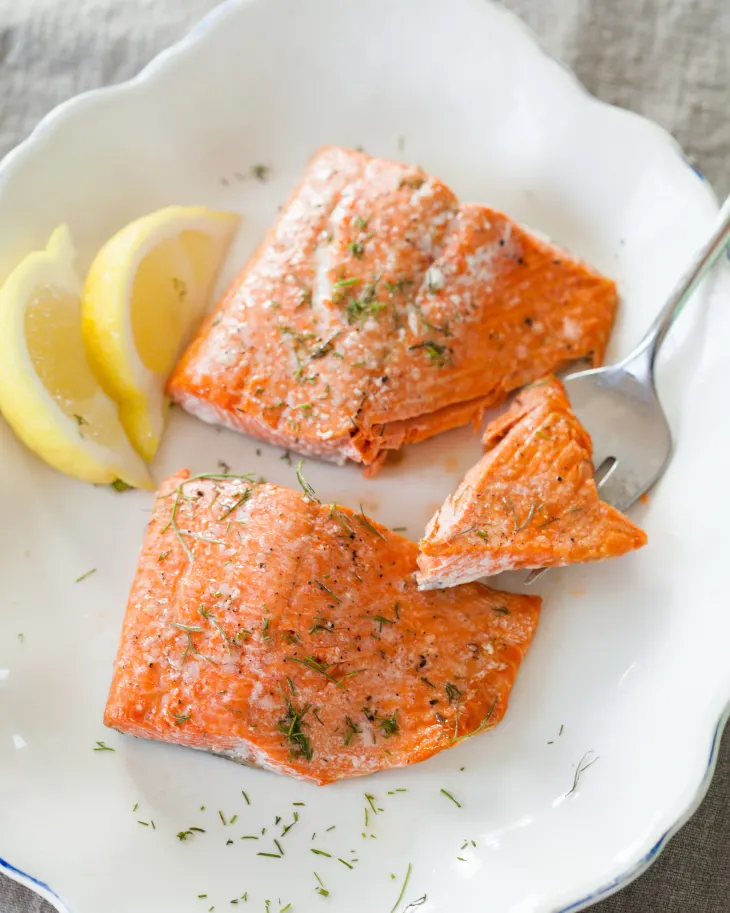

Oven Baked Salmon

Description
Want a healthy dinner entree that is incredibly easy to whip together? Thought so... Let's make some oven baked salmon that you can serve along with vegetables of your choosing.
Ingredients
- 1 to 3 pounds skin-on salmon fillets
- Olive oil
- Salt
- Pepper
- Lemon wedges, to serve
Steps
- Preheat the oven to 425°F.
- Pat the salmon dry with a paper towel.
- Rub the salmon with oil, salt, and pepper.
- Place the salmon in the baking pan.
- Bake for 4 to 6 minutes per half-inch thickness of salmon.